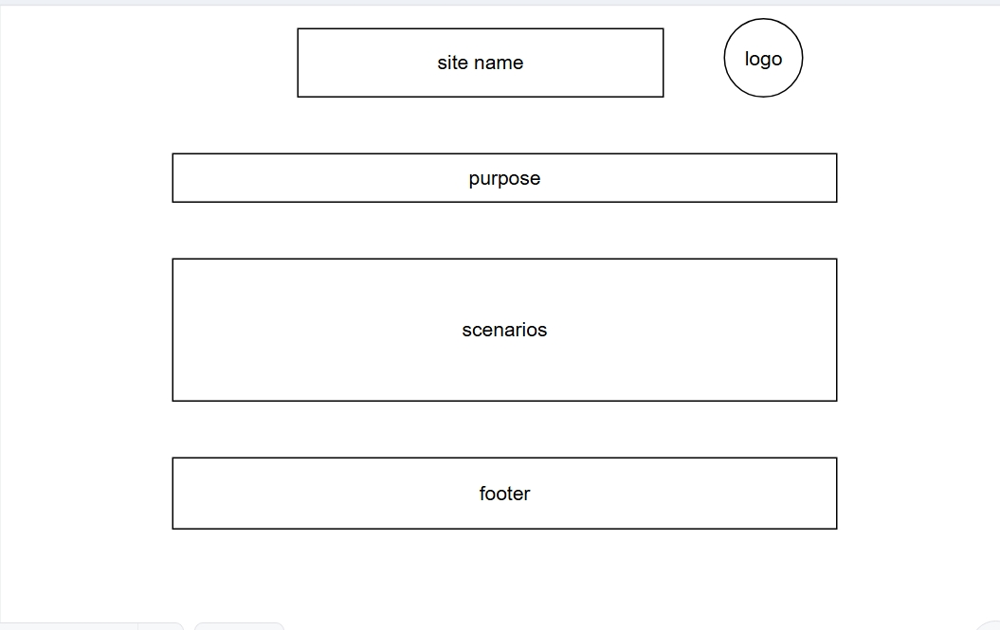
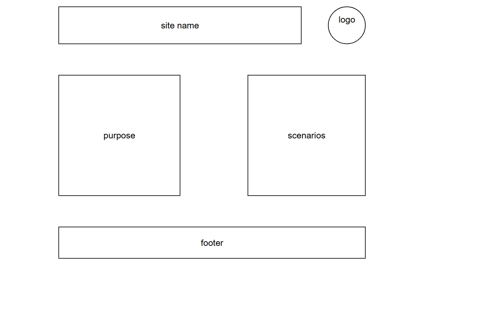

Site Name
Ugandan Proverbs Hub — This name reflects the site’s purpose of sharing and teaching Ugandan proverbs. It emphasizes culture, wisdom, and accessibility.
Optional domain availability: ugandanproverbs.org
Site Purpose
The site provides a hub for Ugandan cultural wisdom by offering collections of proverbs, explanations of their meanings, and interactive tools for memorization. It also highlights the cultural context behind each proverb.
Scenarios
- “What is a proverb that teaches perseverance in Ugandan culture?”
- “How can I practice memorizing proverbs for my cultural studies class?”
Color Schema
Primary Color: Bright Teal #0aae9b — used for headings and accents.
Secondary Color: Dark Blue (#264653) — used for header, footer, and navigation background.
Text Color: Dark Gray (#333) — used for body text.
Typography
Headings: Arial, sans-serif.
Body Text: Georgia, serif.
Accents: Courier New, monospace.
Wireframe
Mobile View:
[Header]
[Navigation]
[Featured Proverb]
[Content Sections stacked]
[Footer]
Desktop View:
[Header]
[Navigation horizontally]
[Featured Proverb]
[Content in two columns]
[Footer]